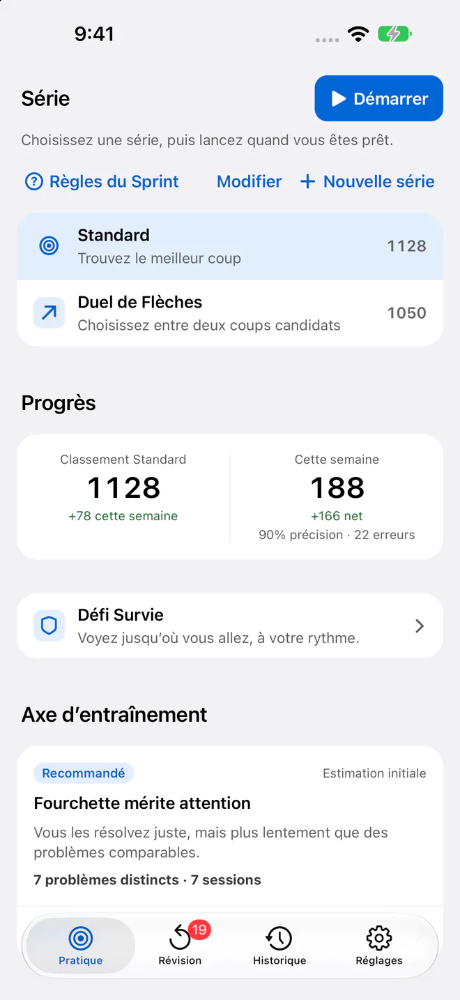
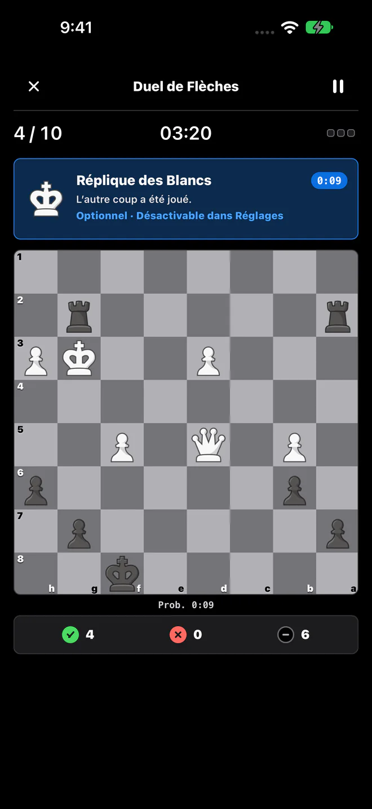
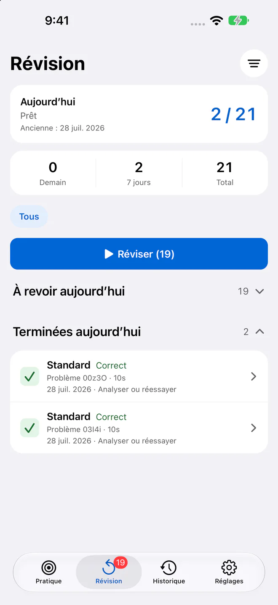
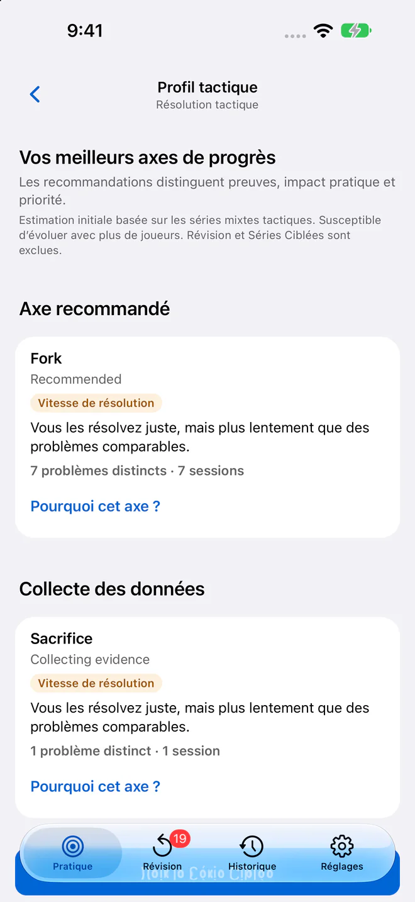
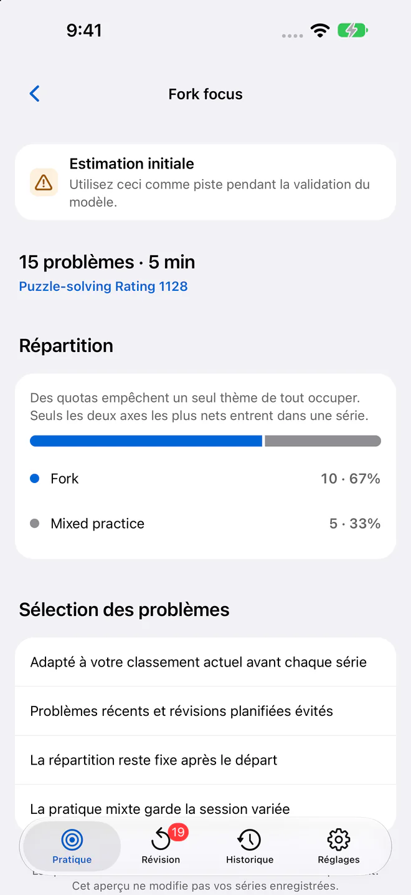
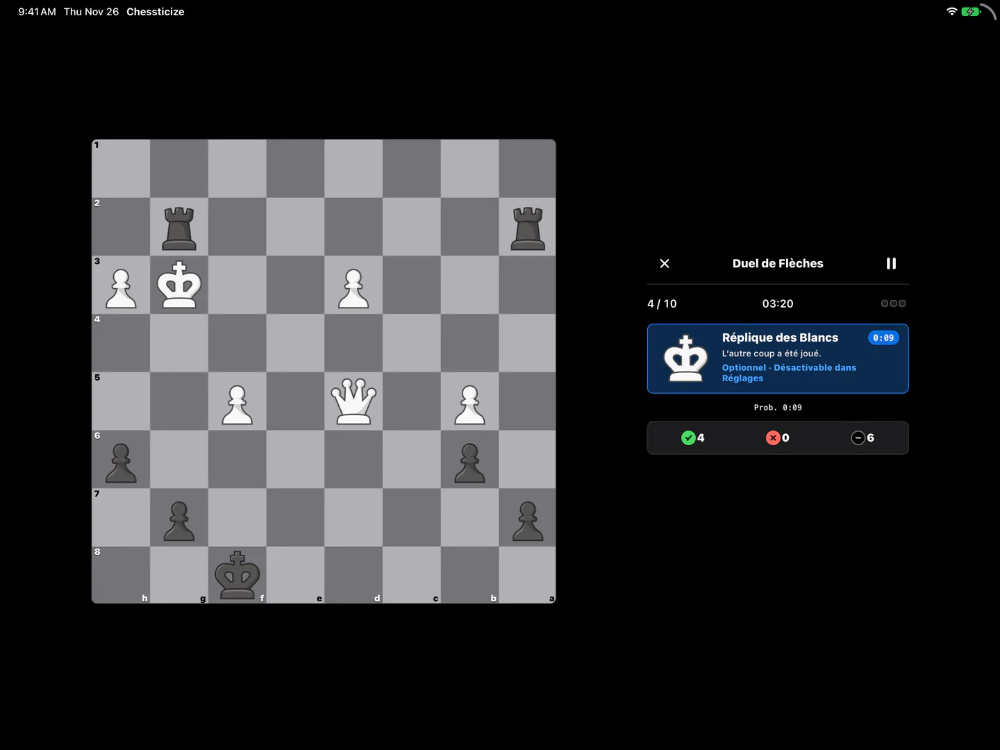

Des problèmes d’échecs pour s’entraîner avec clarté.
Enchaînez des Sprints courts adaptés à votre Elo. Comparez les coups dans Duel de Flèches, puis revenez sur vos erreurs avec la Révision programmée.
Gratuit. Hors ligne. Sans pub ni compte.



La Révision programmée ramène les problèmes qui méritent un second regard.
Les problèmes manqués ou peu clairs reviennent au bon moment. Rejouez librement une position pour revoir la variante sans modifier votre calendrier de Révision.

Les Séries Ciblées partent d’une estimation initiale, puis de vos choix.
Prévisualisez une Série Ciblée issue d’une estimation initiale dans votre Profil Tactique, ou choisissez vous-même thèmes, rythme et niveau.


Une pratique privée avec plus de place pour l’échiquier.
Chessticize fonctionne hors ligne sur mobile, sans publicité ni compte. Sur iPhone et iPad, la synchronisation iCloud privée en option rassemble votre progression entre vos appareils Apple et peut être désactivée à tout moment.
